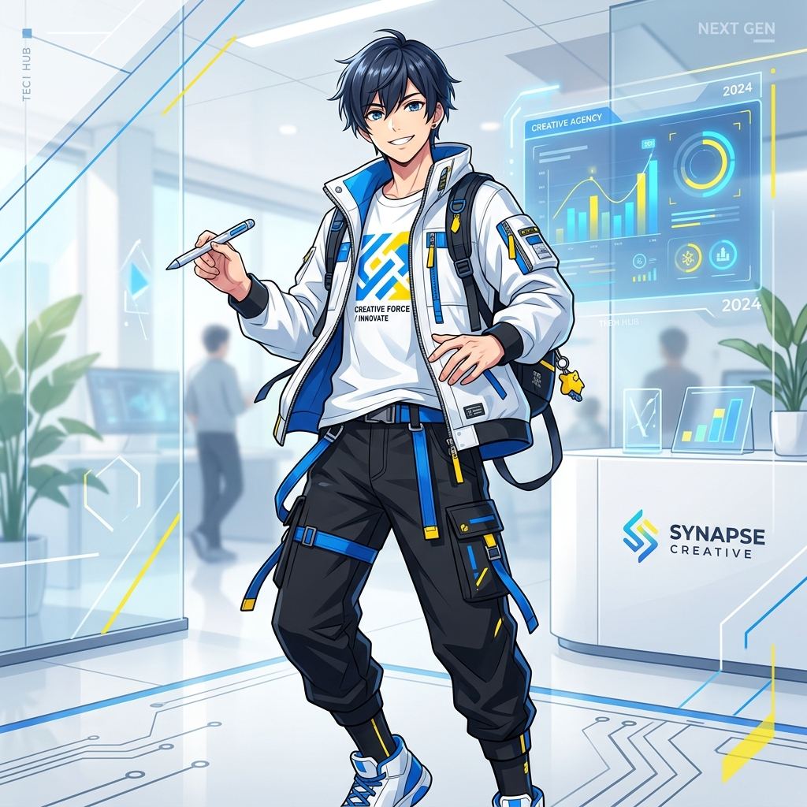

Strategic Intelligence
データと統計に基づき、長期的な資産成長を設計するアナリスト
Investment Philosophy
「自分にとってAIは、膨大なデータを処理し、市場の僅かなシグナルを捉える最強のパートナーです。」
目先のボラティリティに惑わされず、統計的に裏付けられた価値（バリュエーション）を見極める。自分で考える力とAIの計算力を融合させ、確実性の高い未来を構築します。
Top 5 Long-Term Stocks
過去の統計と安定性から導き出した、2026年以降の長期保有推奨銘柄
Walmart
堅実なキャッシュフローと不況下での圧倒的な強さ。生活必需品の王者がデジタル戦略でさらなる成長へ。
Microsoft
クラウドとAIインフラの覇者。強固な参入障壁（Moat）と、統計的に極めて高い収益継続性を誇る。
Coca-Cola
50年以上の増配記録を持つ安定の象徴。インフレ耐性が高く、ポートフォリオの土台を支える存在。
Johnson & Johnson
ヘルスケアの巨大複合体。高いAAA格付けと研究開発力が、長期的な資産の安全性を担保する。
S&P Global
格付けと指数算出における実質的独占。市場の拡大にそのまま追従する、極めて効率的なビジネスモデル。
FX Short-Term Trading
ボラティリティを活用する短期売買。厳格なリスクリワード（1:2以上）とATRに基づく損切り設定が必須。
【短期トレードの根拠】
短期トレード（デイトレード・スキャルピング）では、勝率よりも「損小利大」の徹底が資産形成の鍵となります。毎秒の価格変動（ノイズ）に翻弄されないよう、エントリー時点で必ずStop Loss (損切) を設定し、想定外の損失を排除します。同時に、ATR（アベレージ・トゥルー・レンジ）等の指標から1日あたりのボラティリティを算出し、論理的な Take Profit (利確) を設定しています。
Challenge for Convenience
この授業を通じ、投資判断や学習を爆速化させる「生活を革新するアプリ」の開発に挑戦します。AIを活用し、どこまで個人の表現と効率を極限まで高められるか。その最前線に立ち続けます。